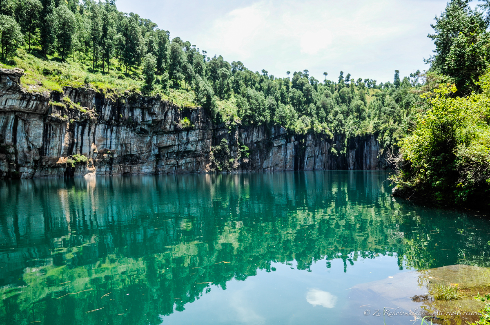

Le Grand Sud de Madagascar
Le Grand Sud de Madagascar
Le Sud de Madagascar , un environnement hostile où la température peut atteindre 40 dégré mais une région où
vous pouvez découvrir des paysages majestueux se trouvant dans l'île.
D' où nous allons passer parcourir la RN7
(Route Nationale 7) donné à la grande route reliant la capitale de Antananarivo à Tuléar.
Behenjy est le spécialiste du foie gras à Madagascar. D'ailleurs grâce aux goûts inoubliables du foie gras , la ville est devenue une destination touristique et gastronomique à ne pas manquer lors d'un voyage dans les hauts plateaux Malagasy.
Behenjy a une agglomération qui se situe entre "Ambohidrano Sud et se termine à Tsarafata-Behenjy".
En venant de Tananarivo, on peut observer et contompler "les chuttes de l'Andromba". En période de basses eaux, on éprouve le désir de se promeneer sur les rochers qui sont à découvert mais ils sont trés glissants d'où de nombreux cas de noyades sur ce secteur.
Ambatolampy ,fonderie d'Aluminium
Madagascar appellé également la Grande île , commence petit à petit à se faire une place parmi les destinations les plus courues dans l'océan Indien.
Cle s' explique notamment par la beauté époustouflante des ses paysages. D' ailleurs ne manquez pas d'aller à la découverte de la charmante ville méconnue d'Ambatolampy , Ambatolampy est une exellente alternative si vous n'êtes pas du genre à suivre les foules, c'est la célèbre ville artistique connue pour la fabrication d'objets en Alluminium notamment :"Les marmites et les cuillères en Alluminium"
Découvrir le mont TSIAFAJAVONA
Tsiafajavona est une des plus hautes montagnes de Madagascar. Elles se trouve dans la région de Vakinankaratra, district d'Ambatolampy et province d'Ambatolampy. La région où se trouve Tsiafajavona est volcaneux. Et il tire son nom de sa signification en Malgache:"Tsy afaka ny zavona" ce qui veut dire : le brouillard ne s' estompe jamais. De même, dans la commune de Tsiafajavona, en bas, si vous regardez cette montagne vous remarquerez qu'évidement ça manque jamais de brouillard en haut. En effet, cette montagne est la deuxième montagne la plus haute de Madagascar outre Tsaratanana et Boby. C'est surtout à c ause de sa hauteur qui est de 2643 m qu'on observe toujours des brouillards à côté. Une expérience que vous pouvez tenter quand vous allez aventurer dans ce circuit.Essayez d'aller toute en haut de la montagne , vous y apercevez en bas des nuagesqui planent partout en dessous.
Antsirabe, la ville des pousse-pousses
Située sur les hautes terres du pays, à 1500m d'Altitude , Antsirabé est la troisième plus grande ville de Madagascar. Antsirabé traduit en Malgache par "l' endroit où il y a beaucoup de sel". Pour la rejoindre, il faut roulerprés de 170km au Sud d'Antananarivo. Cependant, Antsirabé étant en altitude, le climat est êxtrememant frais et les températures peuvent déscendre jusqu'à zéro en hiver!
L' allée de la gare
L'allée de la gare s' agit d' une grande avenue verdoyante et calme, avec l'ancienne gare d' Antsirabe au bout. Celle-ci ne fonctionne plus depuis plusieurs décénnies, et ne prend plus de voyageurs.Vous ne pourrez pas non plus la visiter, mais simplement, admirer son style qui rappelle fortement les années où Madagascar était une colonie, une architecture coloniale.
La cathédrale Notre Dame de la Salette est un batiment qui date des années 50, une sorte de reproduction (trés) miniatures des grandes cathédrales Européenes. L' intérieur, trés coloré , se visite.
La cathédrale notre Dame de la Salette

L' hotel des thermes
Créée depuis 1896, l'hôtel des Thermes est parmi les hotels de standing les plus réputés d'Antsirabé.
Il est situé non loin de la gare et la station thermale . Sa réputation lui vient du séjour en exil du roi Mohamed V dans les années 50 .
L' hotel dispose de:
-32 chambresstandarts, 4 appartements et 2 suites.
-Un restaaurant de spécialité Francaise, Italienne et Malgache et un snack
-Une piscine, un service massage ,
un aire de jeux pour les enfants, et diverses terrains de sports tels que le foot,le basket,... -Une boutique, un bureau de change ,un business center,accès wifi,...
Le centre thermale d'Antsirabe est un centre qui offre des soins thermaux ,il se situe au centre ville d' Antsirabe en face des hotels de thermes. La cure thermale d'Antsirabe a été découverte en 1870 par le Missionaire Norvégien nommé "ROSAAS" En parlant de guérison, l'eau thermale guérit :
-Les maladies osseuses , rhumatismales,pshychosomatimales,dermatologiques
-alpha1-distLes troubles du développement psychomoteur, les troubles respiratoirres, gynécologiques ainsi que des diverses maladies transmissibles.
L'eau de source offre un soin de bien de bien être .Le centre thermal possède aussi une piscine chaude ouverte au public.
La fameuse source thermale d'Antsirabe
Etymologiquement le mot Sabotsy " est un terme Malagasy, qui se traduit directement par Samedi.
Un lexique qui lui a été attribué depuis des décenniers dans la région de Vakinankaratra (Prononcé "Vakinankarat'ch").
Autrefois , les colllecteurs qui vivaient dans les périphéries de la région, en particulier dans les campagnes , avaient coutumes de faire une livraison de produits locaux chaque début de week-end dans la ville d' Antsirabe.
Dans les années 80 et 90, le marché en question se trouvait sur une parcelle de terrainque la commune Urbaine d' Antsirabe avait consacr' au commerce. Une surface qui s'étendait approximativement sur une dizaine d'hectares,
là où les échoppes des commerçants constituaient juste d'une petite chaise ,
de tables en bois improvisées faites de cordes nouées, et d'un parapluie assez artisanal jamais arrêté.
ANDRAIKIBA et son fameux lac
Histoire du lac
Situé à 7 kilomères d' Antsirabe, le lac Andraikiba est l'un des meilleurs endroits de la région pour se balader en fin d' aprés-midi.
Une petite promenade sur ses berges est trés agréable. D' ailleurs,le lac fut un lieu de détente pendant l' époque coloniale.
Aujourd'hui, hormis la balade autour du lac, il présente l'intéret d' une longue série de boutiques de souvenirs.
Plusieurs artistes locaux proposent également diverses animations sur place tous les jours.
HISTOIRE DU LAC
Tritriva et son histoire
Le lac Tritriva , un lac mystérieux
Pour les Malagasy,le lac Tritriva inspire le respect et la peur, alors que pour les étrangers, il s'agit surtout d' un site naturel
d' une grande beauté à ne pas manquer lors d' un passage à Antsirabe. Dans tous les cas, il est indéniable que les lieux sont imprégnés
d' une atmosphère particulière. Les guides se font le devoir de rappeller "les fady(interdits)" du lac et deraconter avec ferveur l' histoire de deux amoureux.
L' histoire du lac Tritriva se résume aujourd'hui à celle de Rabeniomby et Ravolahanta, deux amoureux qui se seraient suicidés dans le lac à cause de leur amour interdit. Ce fait
serait passé du temps du roi Andrianampoinimerina.Avant cela, on ne sait pas si le petit lac volcanique avait une autre histoire. Les deux protagonistes auraient eu le coup
de foudre, alors que l' un était issu d' une famille royale et l' autre d' une famille modeste. Leur union était impossible aux yeux de leurs familles respectives et de la société.
L' histoire de Rabeniomby et Ravolahanta
Ambositra, capital de l' artisanat et aux roses
Située à 1350 mètres d' altitude, Ambositra est une charmante petite ville aux couleurs chaudes avec ses maisons typiques en brique
. Abordant un décor montagneux, Ambositra est entourée de rizières en terasses et plantations d'eucalyptus à perte de vue.
ce peuple des hauteurs Betsileo travaille le bois de manière trés raffinée.
Située dans les hautes terres de la grande île, Ambositra se distingue des autres villes notamment sur le plan culturel. Anciennement appelée la ville aux roses,
elle a utilisé ses ressources forestières pour se démarquer et devenir maître de la maqueterie Malgache. Elles est reconnue comme étant la source d' un savoir-faire artisanal ancestral: L' art Zafimaniry
. Vous y trouverez de nombreux objets sculptés qui témoignent de la créativité et de la maîtrise de cet art si particulier.
Une ville de culture et d' artisanat
Outre l' artisanat, vous pourrez découvrir le "FAMADIHANA",
la cérémonie de retournement de morts. Vous assisterez pendant plusieurs jours à des danses,
spécialités culinaires locales et diverses animations, notamment le fameux "SAVIKA",
sport traditionnel au cours duquel les personnes tentent de dompter des taureaux déchainés.
La ville de Manakara
Le nom "Manakara" a pour origine deux signification:
La première signification provient de l' existence du grand rocher" ou "aram-bato" qui se trouve dans la mer, du coté Nord au Sud. Ainsi, le lieu est appellé "Manana aram-bato" d' où le nom "Manakara" . Ce grand rocher est gardé par un être surnaturel qui vive sous l' eau; le "Rangahy Sola"
Le deuxième sens du nom Manakara est due à l' expression "7 vinany". Ce dernier signifie: la rencontre de l'eau douce avec l' eau de mer.
QUE VOIR A MANAKARA
Manakara est ancien village de pêcheur qui a pris de l'importance en tant que terminus du chemin de fer de Fianarantsoa Côte Est. Le paysage de Manakara était marqué par l' existence des 3 arbres bordant de la mer .Malheureusement, il n' en reste
plus qu' un actuellement . Manakara possède aussi un port historique. Ce port a été utilisé par les colons de cette époque. Il s'y trouve encore malgré plus opérationnel.
Dans la partie ouest de Manakara, il ya l' ancienne stade, gare installation militaire et plus loin. On y trouve également le quartier de Tananambao. C' est par là que passe la route Nationale vers Farafangana.
La nouvelle ville est plus belle, avec se boulevards parallèles aux pelouses plantées de cocotiers et de palmiers.
La réserve villageoise d' ANJA
La réserve communautaire d' Anja est une réserve naturelle protégée depuis 1999. Conformément à la légalisation Malgache.
Elle s' étend sur 30 Ha et se situe à 13km au Sud d' Ambalavao, en bordure de la RN7. Cette aire protégée a été créée àl' initiative de la communauté
villageoise locale pour la protection de l'environnement. La réserve est gérée par une association locale pour la protection de l' environnement pour
garder son indépendance. Dans ce site, on trouve plus précisementdes "Maki-Catta".
Le parc National de Ranomafana
Le parc National de Ranomafana est une étape incontournable lors de vos visites
Une faune et flore exeptionnelle
sur la grande ile. En effet, il vous fera découvrir une faune unique composée d' éspèces races malheureusement en voie
d' extinction. Si vous aimez la nature et les animaux, vous ne risquez pas d 'être déçus:
de nombreux oiseaux, de papillons, de chauves-souris et des lémuriens cohabitent dans ces forêts.Vous y trouverez aussi des éspèces
végétales unique au Monde et des
plantes médicinales.
Son paysage
Le parc est entouré de massifs montagneux où il est possible de faire des rondonnées incroyables qui ne manqueront pas de ravir les plus sportifs.
Au moment où vous sortez du parc , vous tomberez sur une piscine thermale et ses bains avoinisant 38°C,
réputée pour ses vetus bienfaisantes.

.jpg)


.jpg)
.jpg)
.jpg)